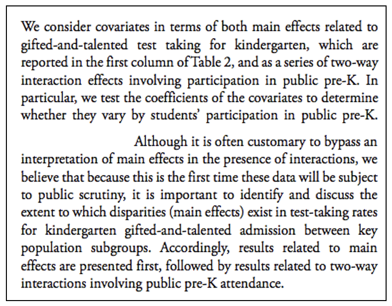
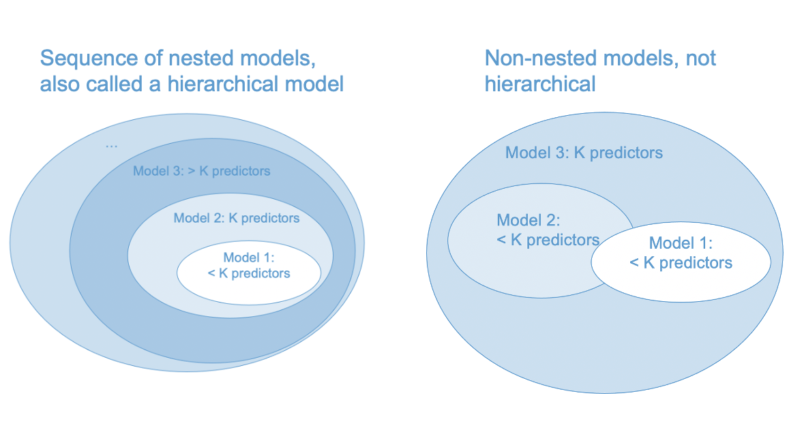
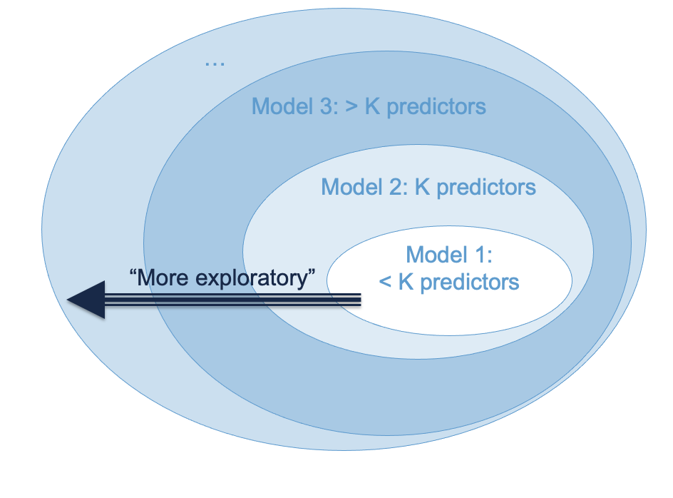
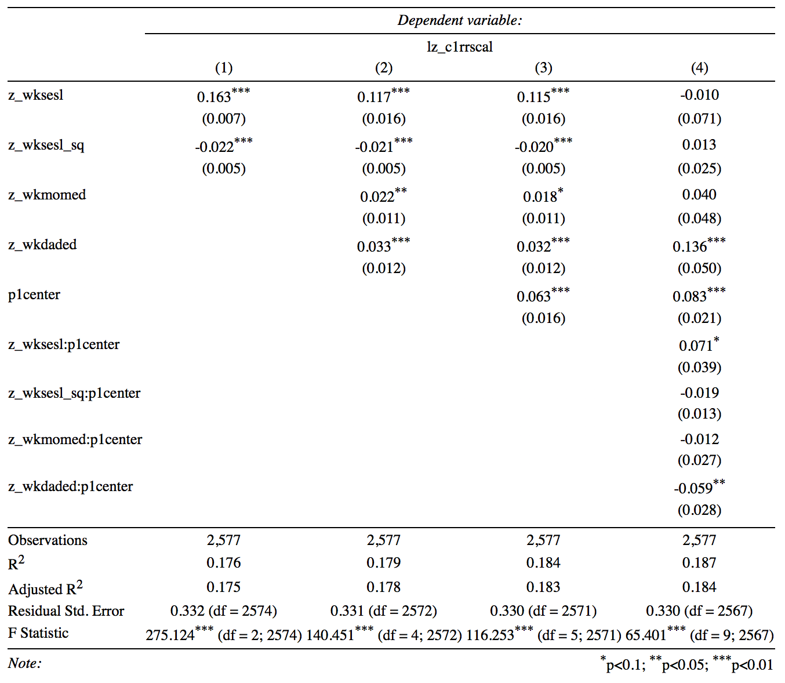

6 Model building
Up until this point we have considered models with only a handful of predictors. This chapter addresses how to scale up to real-life applications in which we may have many predictors. Section 6.1 discusses the main ideas, Section 6.2 goes through a worked example, and Section 6.3 addresses some technical details. Compared to the previous chapters, there aren’t a lot of mathematical details in this chapter. The focus is on using the techniques of the previous chapters in more realistic research scenarios (i.e., with lots of predictors).
There are two basic approaches to model building with many predictors. A simulataneous model is a single regression model that includes all predictors of interest. When there are many predictors, this is sometimes referred to the “kitchen sink” approach – just put everything in the model (including the kitchen sink). Conceptually, this approach has the advantage that it mitigates omitted variable bias and therefore helps justify the causal interpretation of regression coefficients. However, in practice it can lead to computational problems, especially when highly correlated predictors are included in the model. We discuss this situation in Section 6.3.
Hierarchical model building is an alternative approach in which predictors are added into a model sequentially. A hierarchical approach is most appropriate when subsets of predictors can be grouped together conceputally. To illustrate this idea, let’s considering the following hypothetical example in which we seek to explain Reading Achievement using predictors that can be grouped into student factors and curriculum factors:
- Student factors
- age
- prior achievement
- parental education
- SES
- Curriculum factors
- in-classroom reading (hrs)
- peer discussion (hrs)
- reading materials (level)
- homework (hrs)
The student factors and curriculum factors are called “blocks” of predictors. A block is just a conceptual grouping of one or more predictors. It is up to the researcher to decide what counts as a conceptually meaningful block of predictors. The overall idea is to use your knowledge of your research area to design a regression model that addresses your research questions. This takes some practice. We will see some more examples of blocks of predictors in Section 6.1 and Section 6.2.
In hierarchical regression, blocks of predictors are added into the model one at a time. The rationale for adding the blocks of predictors sequentially is to isolate the proportion of variance in the outcome (i.e., R-squared) attributable to each block, while controlling for the other block(s). Using our example, we could proceed as follows:
Step 1. First we run a regression model with just the student factors. These variables are known to predict Reading Achievement, but they aren’t the types of factors that can be intervened upon via schooling. These types of predictors are often called “control variables”. What counts as a control variable is a largely non-statistical consideration that depends on the research context.
- After we run the regression model with this first block of predictors, we record the R-squared statistic. We don’t care very much about the value of the regression coefficients at this point, since we know we have left out the curriculum factors.
Step 2: Next we run a regression model with student factors and the curriculum factors, so that our model now includes all of the predictors. By comparing the the R-squared of the model in this second step (curriculum and student factors) to the R-squared of the model in the first step (only student factors), we can determine how much additional variation in Reading Achievement was explained by the curriculum factors. If the additional variation explained by the curriculum factors is substantial, we can reason that intervening on the curriculum may be a good way to improve Reading Achievement.
It is important to note the following points about this example:
The second step in the hierarchical model is the same the simultaneous model – they both include all of the predictors. This is true in general. The final step of a hierarchical model is always the same as the corresponding simultaneous model.
So, what does the hierarchical model give us that the simultaneous model doesn’t? The change in R-squared attributable to each additional block of predictors, controlling for the previous block(s) of predictors. This “change-in-R-squared” statistic is the main focus of this chapter.
It is important to distinguish model building from variable selection. Model building is about research-question-driven strategies for partitioning the variation explained by a large number of predictors. Variable selection is about “weeding out” predictors that are not useful. So, in model building, the final model should always include all of the potential predictors, but in variable selection, the final model may include only a subset of the potential predictors.
Variable selection is an important topic that is the focus of a lot current research in machine learning. There was also a large number of “step-wise” regression procedures used for variable selection in last century, but they didn’t work (i.e., different procedures resulted in different models and there were no good criteria by which to choose amongst them). If you have a research scenario that requires variable selection, this problem is best dealt with through machine learning. If you are interested, check out this resource: https://glmnet.stanford.edu (and feel free to ask questions in class!).
A note on terminology: In some research areas, “hierarchical” is used to refer to multilevel models (e.g., “hierarchical linear models” in sociology). That is not the usage here. It would make sense to refer to the types of models we are calling “hierarchical” as “step-wise”, but, as mentioned in the previous point, the term “step-wise” already refers to a large number flawed techniques for variable selection. So… here we are.
One last thing: The overall idea of this chapter is that you should build models that answer your research questions. For concreteness, this chapter discusses the main statistical techniques for model building in the context of hierarchical regression. But, you don’t need to use hierarchical regression – the same techniques can be used in other ways creative ways as well.
6.1 Hierarhical models
The key ideas of hierarchical regression are:
Partition the predictors into conceptual “blocks”. Each block contains at least one predictor, but they usually contain more than one (e.g., “control variables”, “home factors”). No predictor can be included in more than one block.
Build a series of regression models in which the blocks are entered into the model sequentially. For this to be hierarchical model building, it is required that each new model in the series includes the blocks from all previous models. So, with three blocks we would have:
\[ \begin{align} & \text{Model 1: Block 1} \\ & \text{Model 2: Block 1 + Block 2} \\ & \text{Model 3: Block 1 + Block 2 + Block 3} \\ \end{align} \]
Compare the R-squared value of each model to that of the previous model. This allows us to determine whether each new block “adds anything” to the model. To see how this works, denote the R-squared values of our three models as \(R^2_1, R^2_2, R^2_3\), respectively. Then we proceed as follows:
- Compute \(R^2_1\) to evaluate the contribution of Block 1.
- Compute \(\Delta R^2_{21} = R^2_2 - R^2_1\) to evaluate contribution of Block 2, controlling for Block 1
- Compute \(\Delta R^2_{32} = R^2_3 - R^2_2\) to evaluate contribution of Block 3, controlling for Block 1 & 2.
The symbol \(\Delta R^2\) is pronounced “delta R-squared.” It always has two subscripts, which denote the two models being compared.
The main advantage of hierarchical modeling is that we partition the total variance explained by all of the predictors into parts contributed uniquely by each block. In particular, it follows from the definition of delta R-squared that:
\[ R^2_3 = R^2_1 + \Delta R^2_{21} + \Delta R^2_{32}. \] This means that the variation explained by all of the predictors together (\(R^2_3\)) can be separated into the 3 distinct components that are isolated by using hierarchical approach.
Sometimes we let \(R^2_0\) denote a model that contains no predictors (only the intercept). Then \(R^2_1\) can be equilvanently written as \(\Delta R^2_{10}\). This makes the notation of the previous equation a bit more consistent:
\[ R^2_3 = \Delta R^2_{10} + \Delta R^2_{21} + \Delta R^2_{32}.\]
The above equation shows us that hierarchical modeling building is an approach to partitioning the total variance explained by a set of predictors (here denoted \(R^2_3\)) into the variance uniquely attributable to different blocks of predictors (the \(\Delta R^2\)s). While there are many other approaches to model building, this equation is what uniquely defines hierarchical model building.
6.1.1 Example of blocks
We have already seen some examples of blocks of predictors in the previous chapters. This section highlights two examples.
Categorical predictors with \(C\) categories are represented as blocks of \(C-1\) dummy variables. The dummies are conceptually equivalent to a single predictor.
Interactions are blocks of predictors. Often interactions are entered into a regression model on separate step, after the “main effects” have been entered. Below is an excerpt from a study that illustrates this approac. The study is about equitable access to gifted-and-talented (GT) programs in New York City. In order to apply for GT programs, students need to take a test in Kindergarten. The test is optional and not everyone takes it. The study is mainly interested in whether attending Pre-K increases the probability that a child will take the test, especially for students who have been traditionally underrepresented in GT programs. (cite: Lu & Wienberg (2016). Public Pre-K and Test Taking for the NYC Gifted-and-Talented Programs: Forging a Path to Equity. Educational Researcher, 45, 36-47):
More generally, blocks are any subset of predictors about which you want to ask a research question. It can be just one variable, or it can be a collection of conceptually related variables.
Please take a moment to write down one or more examples of a block of variables from your area of research, and I will invite you to share your examples in class.
6.1.2 Nested models
Whatever your blocks are, hiearhical modeling requires they are used to make a sequence of nested models. The idea behind nested models is depicted in Figure 6.1. In the figure, Model 2 contains \(K\) total predictors, and Model 1 contains a subset of those predictors. This relationship is shown by letting the area representing Model 1 be contained by the area representing Model 2. We can think of this like Matryoshka nesting dolls (https://en.wikipedia.org/wiki/Matryoshka_doll). Model 1 is contained within Model 2, in the sense that all of the predictors in Model 1 are also in Model 2.

A bit more technically: One regression model is nested within another if the former can be obtained by removing some predictors from the latter. Other than the difference in the predictors, it is assumed that the models equivalent (same outcome variable, sample samples, etc.).
The difference between nested and non-nested models is illustrated in Figure 6.2. The partially overlapping ovals are intended to indicate that the models share some predictors, but each model also has some unique predictors.

As noted in the figure, a hierarchical model is a series of nested regression models. You might be wondering why it is so important for the models to be nested. Part of this is conceptual – the hierarchical approach allows us to partition the total variance explained into parts attributable to different subsets (blocks) of predictors (see Section 6.1). Nesting is also required to compute statistical tests for the \(\Delta R^2\) statistics (more on this in Section 6.1.4).
In short, we can statistically compare Model 1 and Model 2 in the left hand panel of Figure 6.2, but not in the right hand panel. (Side note: In the right hand panel, we could compare Model 1 vs Model 3 and Model 2 vs Model 3, but this would not be a hierarchical model because the \(\Delta R^2\)s wouldn’t add up to the \(R^2\) of Model 3.)
6.1.3 Some practical advice
So far we have discussed hierarchical modeling conceptually, but have not really addressed how to use it in practice. The following advice is paraphrased from the late Jacob Cohen (cite: Cohen, Cohen, West, & Aitken (2003). Applied Multiple Regression Analysis. Mahwah, NJ: Lawrence Earlbaum. Section 5.7.3).
The hierarchical approach provides an effective strategy of inference if variables are entered into the model according to their relevance to the study.
The variables that are most central to the study should be entered first, those that are secondarily of interest should be entered second, and those that fall into the category, “I wonder if” or “just in case” should be entered last.
This principle may be succinctly stated as “least is last.” That is, “when research factors can be ordered as to their centrality, those of least relevance are appraised last in the hierarchy, and their results taken as indicative rather than conclusive”
Figure 6.3 maps Cohen’s strategy onto our diagram for nested models. One addendum to this approach is that “control variables” are usually entered first. These are variables that have been established as important in past research, but are not of central interest to the present study. The rationale for entering them first is that new studies should add something beyond what has been established by past research.

6.1.4 Delta R-squared
We have already seen how to compute \(\Delta R^2\) – by subtracting the R-squared value of a nested model from that of a nesting model. This is a very widely used way of comparing nested regression models.
When adding predictors into a model one at a time (i.e., blocks with only a single predictor), testing \(\Delta R^2\) is equivalent to testing the b-weight of the added predictor. But when adding multiple predictors into a model, \(\Delta R^2\) provides important information that is not captured by any of the statistics we have considered so far. It is technically called a multiple semi-partial correlation, but “delta R-squared” or “R-squared change” are widely used terminology.
Statistical inference for \(\Delta R^2\) uses the F-test shown below. Let Model 1 be a regression model with \(K_1\) predictors that is nested within Model 2, with \(K_2 > K_1\) predictors. Define \(\Delta R^2 = R^2_2 - R^2_1\) and \(\Delta K = K_2 - K_1\). To test the hypothesis \(H_0: \Delta R^2 = 0\) versus \(H_A : \Delta R^2 > 0\) we can use the test statistic
\[F = \frac{\Delta R^2 / \Delta K}{(1 - R^2_2) /(N - K_2 - 1)} \]
which has an F-distribution on \(\Delta K\) and \(N - K_2 - 1\) degrees of freedom, when the null hypothesis true. This test assumes that Model 2 satisfies the linear regression population model (see @sec-population-model-2) and that Model 1 is nested within Model 2.
6.2 A worked example
To illustrate hierarchical modeling, let’s use the ECLS data to address whether reading achievement at the beginning of Kindergarten (c1rrscal) is related to SES (wksesl), parental (mother’s and father’s) education (wkmomed and wkdaded, respectively), and attendance in center-based care before K (p1center; pre-K status, for short).
This example is intended to be a realistic illustration of how to use the techniques we have covered up to this point. The sections below can be thought of as excerpts from a research paper, and also shows how to report results in a regression table. But there are some caveats that should be mentioned before starting:
- We used some tricks from later chapters to deal with non-linearity, and
- keep in the mind the subset of ECLS data we are using is not a representative sample and the results should not be assumed to generalize to the general population.
6.2.1 Research questions
We will address the following research questions.
RQ1: Does SES predict Reading Achievement upon entry to K?
RQ2: Does Parental Education (mother’s and father’s) predict Reading Achievement, after controlling for SES?
RQ3: After controlling for both SES and Parental Education, is Pre-K Status associated with better Reading Achievement in K?
RQ4: Does the relationship of SES or Parental Education to Reading Achievement change as function of Pre-K Status – in more causal language: does Pre-K participation reduce pre-existing disparities in Reading Achievement upon entry to K?
6.2.2 Data analysis plan
The research questions were addressed via hierarchical regression modeling with the following blocks of predictors.
- Block 1:
wksesl
- Block 2:
wkmomedandwkdaded - Block 3:
plcetner - Block 4: Interactions between
p1centerand the other predictors
To aid the interpretation of regression coefficients in the presence of interactions, all continuous variables (predictors and outcome) were transformed to z-scores. plcenter was coded as binary indicator for Pre-K status.
The blocks were entered into the model in the indicated order. The RQs were addressed by examining the R-square change (\(\Delta R^2\)) for each corresponding block. (In practice, we would also interpret the sign and direction of the significant regression coefficients in the final model, but we will leave that as an exercise.) A significance level of .05 was used for all tests reported in this study.
Preliminary examination of the model residuals indicated violation of the assumption of linearity. To address this, the outcome variable was log-transformed and a quadratic term was added for wksesl (wksesl_sq). These procedures for checking and addressing non-linearity are discussed in the coming chapters.
6.2.3 Results
The F-tests of R-squared change for each block of predictors are reported in Figure 6.4. The results show that block 1 (linear and quadratic trends in SES) explained about 18% of the variance Reading Achievement. While blocks 2 (parental education) and 3 (Pre-K) contributed statistically significant increases in variance explained, the change in R-squared was not large. Block 4 containing the interactions with Pre-K was not statistically significant after controlling for the main effects.
Code
load("ECLS2577.RData")
attach(ecls)
# Recode variables
p1center <- 2 - p1center
z_c1rrscal <- scale(c1rrscal)
z_wksesl <- scale(wksesl)
z_wksesl_sq <- z_wksesl^2
z_wkmomed <- scale(wkmomed)
z_wkdaded <- scale(wkdaded)
log_c1rrscal <- log(z_c1rrscal - min(z_c1rrscal) + 1)
# Run models
# models
mod1 <- lm(log_c1rrscal ~ z_wksesl + z_wksesl_sq)
mod2 <- lm(log_c1rrscal ~ z_wksesl + z_wksesl_sq + z_wkmomed + z_wkdaded)
mod3 <- lm(log_c1rrscal ~ z_wksesl + z_wksesl_sq + z_wkmomed + z_wkdaded + p1center)
mod4 <- lm(log_c1rrscal ~ (z_wksesl + z_wksesl_sq + z_wkmomed + z_wkdaded)*p1center)
R2_1 <- summary(mod1)$r.squared
R2_2 <- summary(mod2)$r.squared
R2_3 <- summary(mod3)$r.squared
R2_4 <- summary(mod4)$r.squared
rsquared <- c(0, R2_1, R2_2, R2_3, R2_4)
delta_rsquared <- c(0, R2_1, R2_2 - R2_1, R2_3 - R2_2, R2_4 - R2_3)
Models <- paste0("Model ", 0:4)
names(delta_rsquared) <- Models
# Tests of R-square change
model_results <- knitr::kable(cbind(Rsquared = rsquared,
Delta.Rsquared = delta_rsquared,
anova(lm(log_c1rrscal ~ 1), mod1, mod2, mod3, mod4)),
digits = 3)
model_results| Rsquared | Delta.Rsquared | Res.Df | RSS | Df | Sum of Sq | F | Pr(>F) | |
|---|---|---|---|---|---|---|---|---|
| Model 0 | 0.000 | 0.000 | 2576 | 343.636 | NA | NA | NA | NA |
| Model 1 | 0.176 | 0.176 | 2574 | 283.114 | 2 | 60.522 | 277.886 | 0.000 |
| Model 2 | 0.179 | 0.003 | 2572 | 282.032 | 2 | 1.083 | 4.970 | 0.007 |
| Model 3 | 0.184 | 0.005 | 2571 | 280.271 | 1 | 1.761 | 16.168 | 0.000 |
| Model 4 | 0.187 | 0.002 | 2567 | 279.538 | 4 | 0.733 | 1.683 | 0.151 |
Although we didn’t have research hypotheses about the individual predictors, it is often useful to report a table such as the one below to summarize that kind of information. The table was produced using the stargazer package in R and is representative of the usual format for reporting regression output from hierarchical regression models. The values reported for each variable are the regression coefficients, with the standard errors in parenthesis. Please take a moment to look over the table and write down any questions you have about its interpretation

6.2.4 Interpretation
The focus of this section is on the interpretation of the \(\Delta R^2\) statistics and their significance. In practice, we would also interpret the sign and direction of the significant regression coefficients in the final model. As noted above, the outcome variable was log transformed, but we ignore that detail here. It would usually not be necessary to report results both in a table and inline, but the latter are shown for illustrative purposes (practice, practice, practice!).
RQ1: SES had significant linear and quadratic relationships with Reading Achievement. Together, both predictors explained about 17.6% of the variance in Reading Achievement (\(R^2 = .176, F(2, 2574) = 275.12, p < .001)\).
RQ2: After controlling for SES, Parental Education explained a small but statistically significant proportion of the variance in Reading Achievement (\(\Delta R^2 = .003, F(2, 2572) = 4.94, p = .007\)),
RQ3: After controlling for SES and Parental Education, Pre-K status explained an additional .5% of the variation in reading achievement (\(\Delta R^2 = .005, F(1, 2571) = 16.15, p < .001\)).
RQ4: There was mixed evidence about the interactions between Pre-K Status and the other predictors. The F-test of R-squared change indicated that the interaction terms did not explain a significant amount of variation in reading (\(\Delta R^2 = .002, F(4, 2567) = 1.68, p = .15\)). However, the interaction with paternal education was significant at the .05 level. After re-running Model 4 with only the paternal education interaction, it was found that this effect was not significant at the .05 level (\(t(2570) = -0.856, p = 0.39\); see output below). It may be concluded that there were no significant interactions with Pre-K status.
Code
mod4A <- lm(log_c1rrscal ~ z_wksesl + z_wksesl_sq + z_wkmomed + z_wkdaded*p1center)
summary(mod4A)
Call:
lm(formula = log_c1rrscal ~ z_wksesl + z_wksesl_sq + z_wkmomed +
z_wkdaded * p1center)
Residuals:
Min 1Q Median 3Q Max
-0.88751 -0.23151 -0.00025 0.20858 1.34884
Coefficients:
Estimate Std. Error t value Pr(>|t|)
(Intercept) 0.795829 0.015160 52.495 < 2e-16 ***
z_wksesl 0.115158 0.016322 7.056 2.2e-12 ***
z_wksesl_sq -0.019645 0.005306 -3.702 0.000218 ***
z_wkmomed 0.018424 0.011174 1.649 0.099327 .
z_wkdaded 0.042770 0.017016 2.513 0.012016 *
p1center 0.060274 0.016163 3.729 0.000196 ***
z_wkdaded:p1center -0.014023 0.016373 -0.856 0.391830
---
Signif. codes: 0 '***' 0.001 '**' 0.01 '*' 0.05 '.' 0.1 ' ' 1
Residual standard error: 0.3302 on 2570 degrees of freedom
Multiple R-squared: 0.1846, Adjusted R-squared: 0.1827
F-statistic: 96.99 on 6 and 2570 DF, p-value: < 2.2e-16In summary, it was found that SES and Parental Education were significant predictors of children’s Reading Achievement upon entry to Kindergarten, indicating that pre-existing disparities in reading due to economic factors are apparent at even this very early age. Attendance in Pre-K explained an additional .5% of variance in Reading Achievement and was associated with increased Reading Achievement; however, there was no evidence that participation in Pre-K reduced pre-existing disparities in Reading Achievement associated with the economic factors (i.e., there were no interactions between Pre-K participation and the economic factors).
6.3 Too many predictors?
What is better: more predictors or fewer? While there is no definitive answer to this question, there are two points that we should keep in mind when adding predictors into a model:
The ratio of sample size to number of predictors: \(N / K\).
The correlation among the predictors (AKA multicollinearity).
In order to understand the effect of these factors in multiple regression, its helpful to refer to the formula for the standard error of a regression coefficient (from Section 3.7.1), which is presented again below:
\[ SE({b_k}) = \frac{s_Y}{s_k} \sqrt{\frac{1 - R^2}{N - K - 1}} \times \sqrt{\frac{1}{1 - R_k^2}}. \]
Recall that \(s\) denotes standard deviations and that \(R_k^2\) is the R-squared from the regression of the \(k\)-th predictor on the remaining \(K-1\) predictors.
6.3.1 \(N/K\)
We can see from the equation for \(SE({b_k})\) that increasing the number of predictors leads the term \(N-K-1\) to get smaller. Consequently, the ratio
\[ {\frac{1 - R^2}{N - K - 1}} \]
will get larger (and hence the standard error will get larger) if the increase in the number of predictors is not compensated by an increase in \(R^2.\) In other words, predictors that do not add explanatory power to the model (i.e., do not increase R-squared) will lead to reduced precision for all of the regression coefficients.
So long as \(N >> K\), the effect of the number of predictors is negligible. But when the number of predictors gets close to the sample size, the estimates of the regression coefficients can become very imprecise. Many seek “rules of thumb” for the ratio of observations to predictors. This is just a complicated way of asking how large the sample size needs to be, and the correct answer to that question is provided by power analysis (Section 2.8). That said, if \(N/K < 30\)-ish you should start probably worrying about the number of predictors in your model.
6.3.2 Multicollinearity
Regardless of sample size, when a predictor is highly correlated with the other predictors, its precision is negatively affected via the term \(R^2_k\). When \(R^2_k = 1\) the situation is called multicollinearity. Note that multicollinearity can occur even if none of the pairwise correlations among the predictors is large – it has to do with the relation between predictor \(k\) and all of the other predictors, which is why it is called multicollinearity.
The term \(1 - R_k^2\) is called the tolerance and its reciprocal is called the variance inflation factor (VIF).
\[ VIF = \frac{1}{1 - R_k^2} \]
Note that \(\sqrt{VIF}\) appears in formula for the standard error of the regression coefficient.
Some examples of how to interpret the \(VIF\) are provided below:
If \(VIF = 5\), the estimated regression coefficient is 5 times less precise than it would be without multicollinearity.
If \(VIF = 10\), the estimated regression coefficient is 10 times less precise than it would be without multicollinearity.
If \(VIF > 10\), it is a good idea to reconsider whether the predictor needs to be recoded or omitted from the model.
In general, it is a good practice to check VIF as part of model diagnostics, which is the topic of the next chapter. For our example, the VIF statistics for Model 3 and Model 4 are reported below.
For Model 3:
Code
# install.packages("car")
car::vif(mod3) z_wksesl z_wksesl_sq z_wkmomed z_wkdaded p1center
6.290370 1.206007 2.950358 3.377283 1.053738 For Model 4:
Code
car::vif(mod4)there are higher-order terms (interactions) in this model
consider setting type = 'predictor'; see ?vif z_wksesl z_wksesl_sq z_wkmomed
28.157965 6.447179 12.799652
z_wkdaded p1center z_wksesl:p1center
13.816244 1.812096 28.320202
z_wksesl_sq:p1center z_wkmomed:p1center z_wkdaded:p1center
7.562264 12.516708 14.011576 We can see that including the interactions led to a high degree of multicollinearity for some of the regression coefficients in the model. Based on this information, as well as the non-significant \(\Delta R^2\) for the interaction block, it would be advisable to focus our interpretation on Model 3 rather than Model 4.
6.4 Workbook
This section collects the questions asked in this chapter. There aren’t many, we will mainly be focussed on going through the worked example during class time.
Please take a moment to write down one or more examples of a block of variables from your area of research, and I will invite you to share your examples in class.
- Look over the tables below and write down any questions you have about their interpretation or the write up provided in Section 6.2.
| Rsquared | Delta.Rsquared | Res.Df | RSS | Df | Sum of Sq | F | Pr(>F) | |
|---|---|---|---|---|---|---|---|---|
| Model 0 | 0.000 | 0.000 | 2576 | 343.636 | NA | NA | NA | NA |
| Model 1 | 0.176 | 0.176 | 2574 | 283.114 | 2 | 60.522 | 277.886 | 0.000 |
| Model 2 | 0.179 | 0.003 | 2572 | 282.032 | 2 | 1.083 | 4.970 | 0.007 |
| Model 3 | 0.184 | 0.005 | 2571 | 280.271 | 1 | 1.761 | 16.168 | 0.000 |
| Model 4 | 0.187 | 0.002 | 2567 | 279.538 | 4 | 0.733 | 1.683 | 0.151 |
6.5 Exercises
The exercises reproduce the worked example in Section 6.2. We will go through this material in class together, so you don’t need to work on it before class (but you can if you want.)
Before staring this section, you may find it useful to scroll to the top of the page, click on the “</> Code” menu, and select “Show All Code.”
First we set up the variables
Code
# Clean up env. and load data
#rm(list = ls())
#load("ECLS2577.RData")
#attach(ecls)
# Recode variables
p1center <- 2 - p1center
z_c1rrscal <- scale(c1rrscal)
z_wksesl <- scale(wksesl)
z_wksesl_sq <- z_wksesl^2
z_wkmomed <- scale(wkmomed)
z_wkdaded <- scale(wkdaded)
log_c1rrscal <- log(z_c1rrscal - min(z_c1rrscal) + 1)Next, run the models.
Code
# Run models
mod1 <- lm(log_c1rrscal ~ z_wksesl + z_wksesl_sq)
mod2 <- lm(log_c1rrscal ~ z_wksesl + z_wksesl_sq + z_wkmomed + z_wkdaded)
mod3 <- lm(log_c1rrscal ~ z_wksesl + z_wksesl_sq + z_wkmomed + z_wkdaded + p1center)
# Note the syntax here for interacting one variable with many
mod4 <- lm(log_c1rrscal ~ (z_wksesl + z_wksesl_sq + z_wkmomed + z_wkdaded)*p1center)
# Regression table -- will discuss this in class
# stargazer::stargazer(mod1, mod2, mod3, mod4, type = 'html', omit = "Constant")
knitr::include_graphics("files/images/stargazer.png")The stargazer table doesn’t format nicely in markdown, it is attached as a screen shot instead. We will go through some different types of output with stargazer in class. You must install the stargazer package for the code to work.
The above table reports the \(R^2\) for each model but does not provide the \(\Delta R^2\) statistics or the corresponding F-tests. The \(\Delta R^2\) statistics require some additional processing:
Code
# Get R-squared
R2_1 <- summary(mod1)$r.squared
R2_2 <- summary(mod2)$r.squared
R2_3 <- summary(mod3)$r.squared
R2_4 <- summary(mod4)$r.squared
rsquared <- c(0, R2_1, R2_2, R2_3, R2_4)
# Compute R-squared change
delta_rsquared <- c(0, R2_1, R2_2 - R2_1, R2_3 - R2_2, R2_4 - R2_3)
# Set up for pretty printing
results <- cbind(Rsquared = rsquared,
Delta.Rsquared = delta_rsquared,
anova(lm(log_c1rrscal ~ 1), mod1, mod2, mod3, mod4))
knitr::kable(results, digits = 3)| Rsquared | Delta.Rsquared | Res.Df | RSS | Df | Sum of Sq | F | Pr(>F) |
|---|---|---|---|---|---|---|---|
| 0.000 | 0.000 | 2576 | 343.636 | NA | NA | NA | NA |
| 0.176 | 0.176 | 2574 | 283.114 | 2 | 60.522 | 277.886 | 0.000 |
| 0.179 | 0.003 | 2572 | 282.032 | 2 | 1.083 | 4.970 | 0.007 |
| 0.184 | 0.005 | 2571 | 280.271 | 1 | 1.761 | 16.168 | 0.000 |
| 0.187 | 0.002 | 2567 | 279.538 | 4 | 0.733 | 1.683 | 0.151 |
The variance inflation factors for Model 3 and Model 4 are obtained use the vif function of the car package (you must install the car package for this code to work).
Code
# install.pacakges("car")
car::vif(mod3) z_wksesl z_wksesl_sq z_wkmomed z_wkdaded p1center
6.290370 1.206007 2.950358 3.377283 1.053738 Code
car::vif(mod4)there are higher-order terms (interactions) in this model
consider setting type = 'predictor'; see ?vif z_wksesl z_wksesl_sq z_wkmomed
60.867975 12.682305 28.145377
z_wkdaded p1center z_wksesl:p1center
31.720745 1.812096 59.296155
z_wksesl_sq:p1center z_wkmomed:p1center z_wkdaded:p1center
12.217023 28.440378 30.766199 Code
# clean up
rm(list = ls())
detach(ecls)